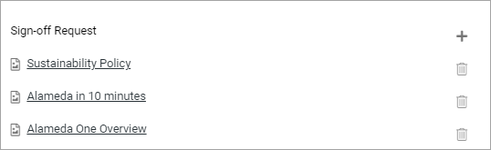
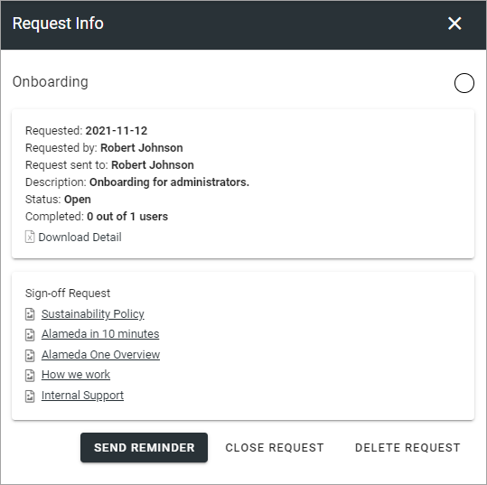

Requests¶
All created requests are listed here. You can filter on “Requested By” and “Progress Status” (In Progress or Completed).
Here’s an example of a list:

The Status column in the middle indicates if the request is open or closed. the Status column to the right indicates the number of answers; white for none, yellow for some/ongoing and green for all that the request was sent to.
For more details and the possibiblty to delete a request, click the link (Name).
Create a new request¶
To create a new request, do the following:
Click the plus.

Use the following settings:

Custom: Here you can choose to create a Custom Sign-off Request or use a template. You can also select “Current Page” which is very useful in for example a Page Type. The request is then always tied to the current page, wherever that is.
(Template list): Available when “From Template” is selected above. Lists all available Sign-off Request templates, if any. Select template here.
Name: Add a name for the request here, in any of the tenant languages (click the flag to chance language).
Description: You can add a description of the request here, in any of the tenant languages (click the flag to chance language).
Sign-off Request: Here you add the pages that should be signed off. If you selected a template, the list of pages will most likely be pre populated with a number of pages. You can add or remove pages as needed. See below for more details.
Request sent to: Select one or more users or groups to send the request to by e-mail. Single users, Security groups and Microsoft 365 groups can be added here (In Omnia on-prem, Microsoft 365 groups can’t be used). Note that the maximum number to send to can be set under “Settings”.
Add or remove pages as needed.
Click REQUEST to save the Sign-off request and send it. If you don’t, nothing is saved.
To add or remove pages¶
Here’s how to add or remove pages for a Sign-off Request. It works the same with a template or without.
If you use a template, this list will be pre populated, for example:
To remove a page from the list, click the dust bin (this does not affect the template). To add additional pages, click the plus.
The following is shown:

You can now Navigate and Pick (Browse) or Search, the same way as in the Page Picker (it’s a part of the Page Picker that is used here). See this page for more information: The Page Picker
Here you click ADD when you have selected one or more pages to add to the Sign-off Request.
Checking up on a request¶
You can check up on a Sign-off request to see what has happened.
Click the link (Name) for the request.
Something like the following is shown:
Here you can see, for example the status and how many has completed the request. For more information, you can click “Download Detail” to download an Excel file.
Additionally, you can send a reminder to all participants.
Close or delete a request¶
You can close a request that should no longer be active. You can delete a request no longer need.

When you close a request, you can choose to send an email to those that has not completed the request, that it’s no longer active:

A closed request can be reopened, a deleted request can (ofcourse) not.
Sign-off Requests Rollup block¶
There’s a bloxck available to be used for listing the Sign-off Requests that is sent to the logged in user or a group that the user belongs to.
More information about the block is found here: Sign-off Requests Rollup